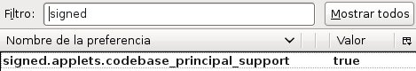
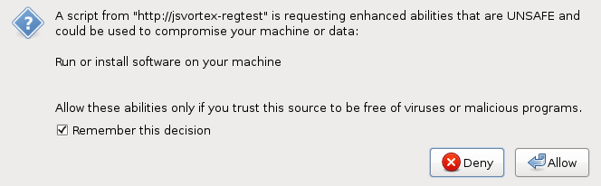

Firefox browser configuration
Firefox jsVortex support uses mozilla sockets API provided by several interfaces
that are restricted for security reasons. Thus, you have to enable
firefox to ask the user to accept those components to be used. This is
done following the next steps:
- Type in your firefox brower the following url: about:config and accept the warning to enter inside firefox user configuration.
- Now search for "signed" keyword and double click on "signed.applets.codebase_principal_support" to leave it as true.

- Now the first time that the user access to a jsVortex enabled page
will be asked to allow accessing to priviledge API. This dialog must
be accepted, setting "rembember this decision for this site".
